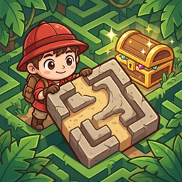
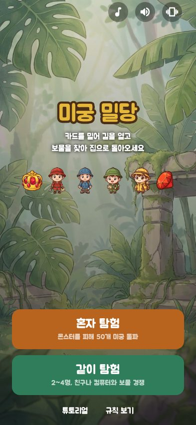
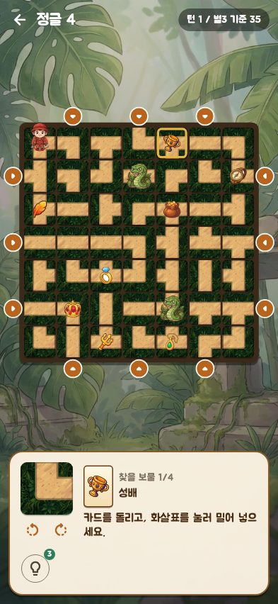
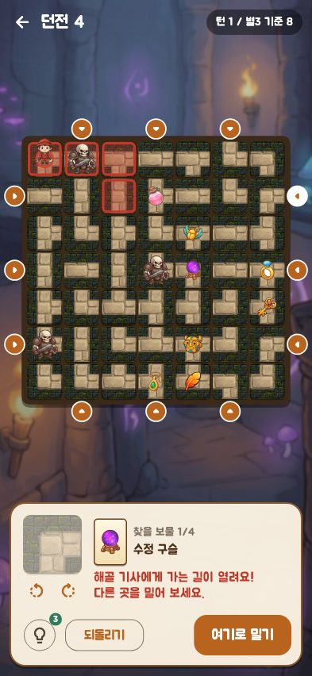
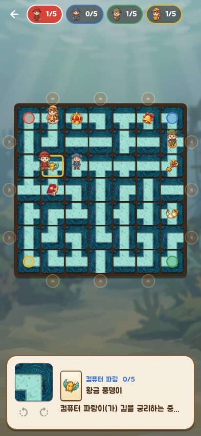

미궁 밀당 Maze Push
밀어서 여는 보물 미로 · Treasure Maze · Slide the maze, grab the treasure




어떤 게임인가요?
손에 든 미로 카드를 판 가장자리에 밀어 넣어 길을 새로 만드는 퍼즐 게임이에요. 보물 카드를 뽑아 목표를 정하고, 보물 4개를 모은 뒤 처음 출발한 집으로 돌아오면 승리!
- 혼자 탐험: 정글·던전·사막·바닷속·설산, 50개 미궁. 몬스터와 길이 이어지면 잡혀요.
- 같이 탐험: 한 기기로 최대 4명, 친구나 컴퓨터와 겨뤄요.
- 온라인 대전: 무작위로 만난 상대와 1:1. 한 차례 30초, 레이팅과 전적이 쌓여요. 구글·애플 계정을 연결하면 기기를 바꿔도 전적이 이어져요.
About
Maze Push is a sliding-tile puzzle. Insert your spare maze card from the edge to reshape the paths, draw treasure cards, collect four treasures and race home. Explore 50 mazes across five worlds solo, play pass-and-play with up to four explorers, or take on random opponents online in 1:1 matches with 30-second turns, ratings and records. Link a Google or Apple account to keep your record on a new device.